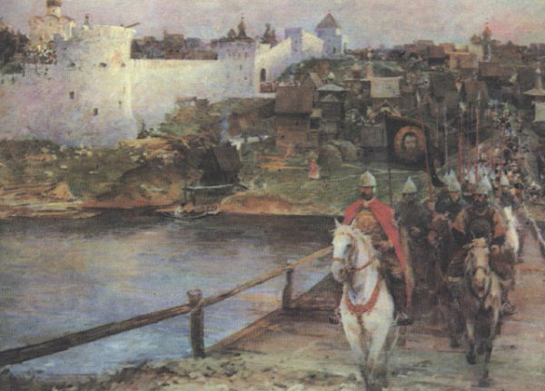
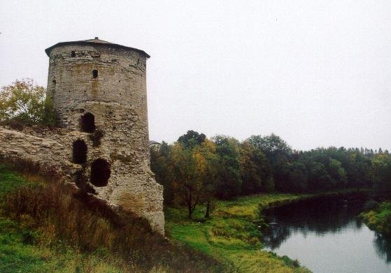

Когда-то, давным-давно, псковичи не только сеяли хлеб, занимались ремеслом и торговлей, строили дома и храмы, растили детей. Едва ли не постоянно, с мечом в руках, приходилось отражать им набеги рыцарских и прочих орд, вбивших себе в головы несбыточную мысль завладеть свободолюбивым народом.

Так было и в тот раз: словно стая коршунов, налетели на древний град злые, беспощадные тевтоны. Только выбрали, поганые, удобную для себя минуту. Застав псковичей врасплох, тевтоны в короткой, но жестокой схватке овладели городом, перебив немногочисленную дружину, а израненного, теряющего сознание псковского Князя схватили, заковали в тяжелые цепи и привели к самому магистру Тевтонского ордена. Надеялись, убогие, что преклонит колена гордый Князь, признает свое поражение и запросит о пощаде.
Но только не добился, как ни старались палачи-подручные, разъяренный магистр от Князя; ни гросьбы о пощаде, ни рабской покорности; даже стона его не услышали.
Приказал тогда магистр своим псам-рыцарям выстроить на крутом берегу реки, там, где воды Псковы разбиваются о серый каменистый выступ, высокую-превысокую башню и заточить в нее мужественного пленника, чтобы тот постоянно видел и слышал с высоты темницы муки и страдания своего народа.
Уж год прошел, и даже больше, а псковичи все терпели издевательства, изнывали от тяжкого ярма орденских поработителей, и все чаще с надеждой обращали взоры к неприступной тюрьме, где томился закованный в железо, но не сломленный Князь. Каждый стон, каждая обида, нанесенная его народу, доносилась до сердца Князя сквозь толщу каменных стен, жгучей болью отдаваясь в изболевшейся душе. И поднимался он тогда с холодного каменного пола, подходил, гремя тяжкими оковами, к узкому проему окна-бойницы и обращался к псковичам с призывом восстать против ненавистных захватчиков, не щадить жизней ради обретения долгожданной свободы.
Призывы Князя подслушали тевтонские стражники и донесли об этом своему начальнику. Рассердился тот и испугался одновременно и в паническом страхе перед восстанием приказал тайно умертвить непокорного Князя.
Но ничто уже не могло остановить бурной волны народного гнева. Каждый, кто только мог держать в руках оружие, бросился на заклятых врагов; не было под рукой оружия - голыми руками терзали закованных в броню тевтонцев. Долго, яростно, молча бились псковичи с врагами целый день, не остановились и темной ночью. И уже чуть было не взяли тевтоны верх над восставшими.
Но тут произошло чудо. Ослепительная молния разрезала напополам ночное черное небо, и не успели стихнуть последние раскаты оглушительного грома, как на стене, на самом верху башни, появилась тень Князя. Смертельный ужас объял тевтонов, а ободренные псковичи с удвоенной силой бросились на врага, разбили его наголову и изгнали далеко за пределы псковской земли.
Правда, много и псковичей полегло в той страшной битве. Всех их с почестями похоронили на каменистом речном выступе, возле стен построенной башни-темницы. Вспомнили псковичи и своего верного Князя и хотели найти его тело, чтобы предать земле. Но пусто было в башне, только тяжелые, поржавевшие цепи змеями распластались на каменном полу.
С тех пор слава великая о Князе стала передаваться из поколения в поколение, дошла и до наших дней. Только не всякий о том знает. Но зато каждый год, в ночь смерти народного героя, доносится из башни тихий и печальный звон. Многие утверждают, что самолично слыхали его. А башню оттого и стали называть в народе Гремячей.

Гремячая башня входила в систему оборонительных сооружений Окольного города Псковской крепости.
Дата основания: 1525 год (правление Василия III)
Расположение: на правом берегу реки Псковы
Архитектор: предположительно Иван Фрязин
Высота: 20 м,
Диаметр у основания: 15 м
Количество ярусов: 6